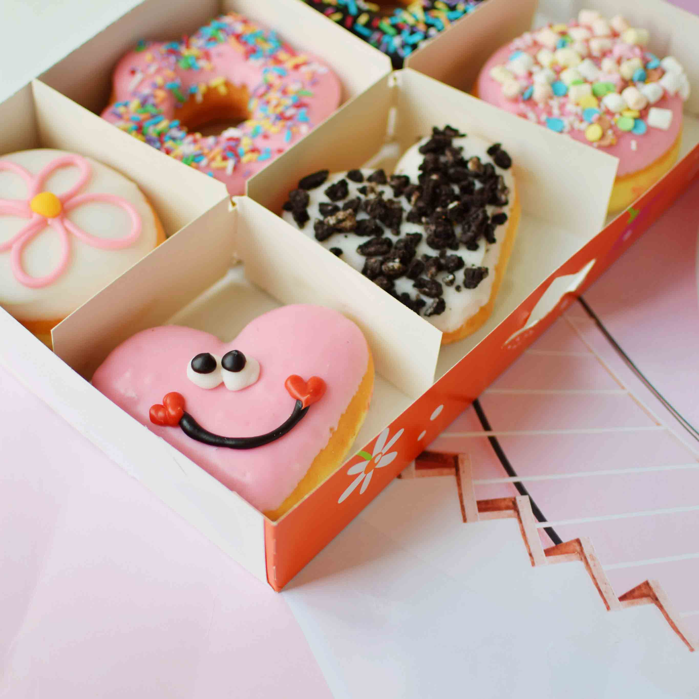

Oproep aan alle vegans
Welkom bij dunkin donuts

Leestijd: 3 minuten
Het moment waar wij met z’n allen op zaten te wachten is dan eindelijk daar! In april introduceerden Dunkin’ DonutsNederland de allereerste plantaardige lijn. En niet zomaar een lijn, maar eentje waarvan menig vegan een aardig groot sprongetje in de lucht van maakt. Wij hebben namelijk niet één maar - ja je hoort het goed – 42 verschillende vegan smaken toegevoegd aan het assortiment. Van de wel befaamde ‘Original Glazed’ en ‘Peanutbutter & Jelly’ tot ‘Mango Passion’ en ‘Double Stuffed Strawberry.’ Wij kunnen ons geluk niet op!
Naar al onze lieve vegan donut lovers out there die jarenlang hunkerden naar een smeuïge donut en wiens enige wens was om hun tanden vast te bijten in onze heerlijke donuts, jullie gebeden zijn verhoord! We got you covered! Speciaal voor jullie hebben wij bij Dunkin’ Donuts Nederland enBelgië een compleet plantaardige lijn met donuts ontwikkeld. Een primeur binnen de Dunkin’ familie wereldwijd en daar zijn wij stiekem toch wel een beetje trots op. Want wees nou eens eerlijk, waar vind je zo’n grote selectie donuts waar je spontaan het water van in de mond gaat lopen, die er zo gezellig uitzien én ook nog eens vegan zijn? Juist, weten wij ook niet!
Daarom dachten wij, nu de Hollandse/Belgische zomer waarschijnlijk echt wel voorbij is en we met z’n allen stiekem toch niet meer aan die bikini body werken, kunnen we net zo goed een klein - of groot - donut feestje bouwen. Want laten we eerlijk zijn, we hebben allemaal een beetje sugar and spice nodig in ons leven! En hoe hang je beter de slingers op dan met onze ‘ConfettiDonut’, heel simpel: gevuld met crème en versierd met confetti! Hier is dat feestje!
Maar dat is echt nog niet alles.
Nog nooit eerder hebben we zo’n ruime keuze gehad in de donut wereld, zelfs wij zijn eenbeetje overrompeld. Hallo we kunnen kiezen uit 32 smaken, hoe bedoel je keuzestress?! Wat dacht je van de ‘Peanut Butter & Jelly’ meteen aardbeien vulling versierd met pindakaas en nootjes, of de ‘Chocolate Chip’ gevuld met banketbakkersroom, versierd met kruimels en een koekje.Klinkt ook niet verkeerd, toch? Meer de tropische kant op? Met de ‘Mango Passion’ - zoals de naam al doet vermoeden, een donut van jawel mango en kokos - waan je je deze zomer zelfs nog even in paradijs. Toch nog even de grens over geweest.
Maar oké, dit zijn simpelweg enkele varianten en we hebben er nog minstens 38 te gaan… Just kidding, we zouden niet durven. We beseffen als geen ander dat de spanboog van menig millennial enkele seconden is en het gebrek aaneen bekende influencer in dit artikel waarschijnlijk al voor een swipe naar rechts, of was het nou juist naar links, heeft gezorgd dus zullen we je niet langer vervelen.
Voor wie de essentie van het verhaal allang kwijt is – wijzelf namelijk ook– hierbij een korte samenvatting: 43 vegan donuts voor al die gezellige planteneters en wereldverbeteraars, we love you and keep up the good work! Maar ook voor iedereen die gewoon benieuwd is of de vegan donuts net zo goed smaken als onze ‘normale’ varianten. And yes they do!
Dus hoppaaa trek je hardloopschoenen (of hakken, again het is jouw feestje) aan, maak een sprintje naar de dichtstbijzijnde flagstore of bestel via www.dunkindonuts.nl.
Lees doorrrr
Alle blogs-
Vegan
Oproep aan alle vegans out there: donut worry, we got you covered
-
Vegan
Oproep aan alle vegans out there: donut worry, we got you covered
-
Vegan
Oproep aan alle vegans out there: donut worry, we got you covered